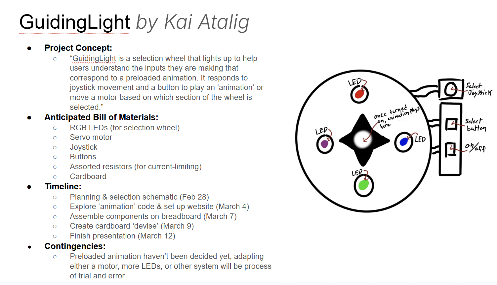
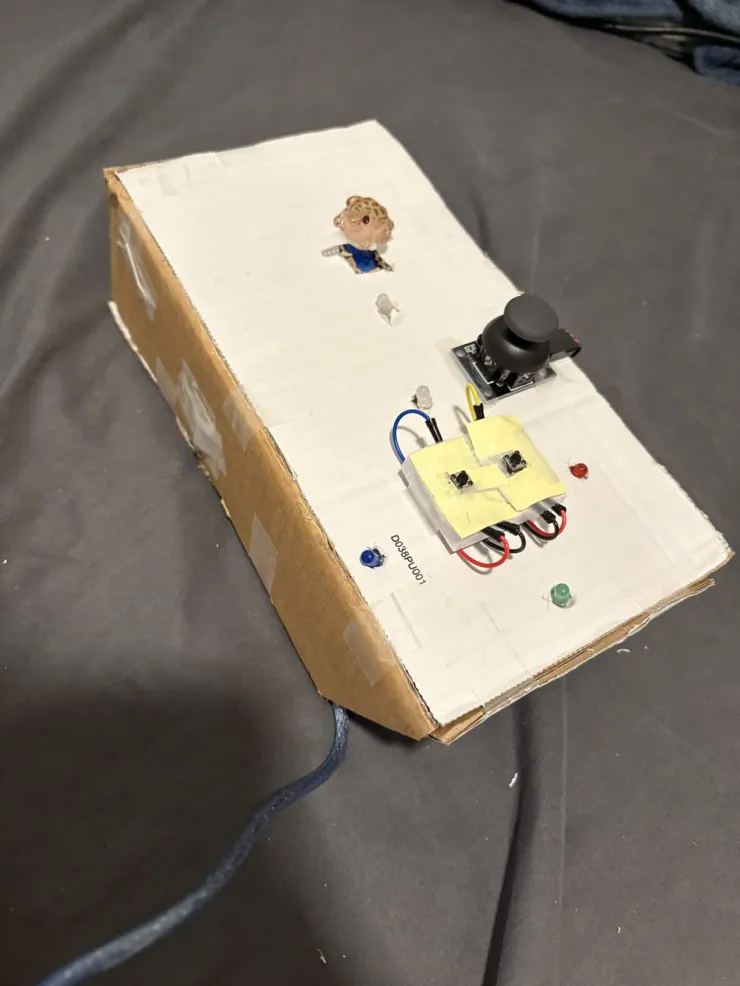
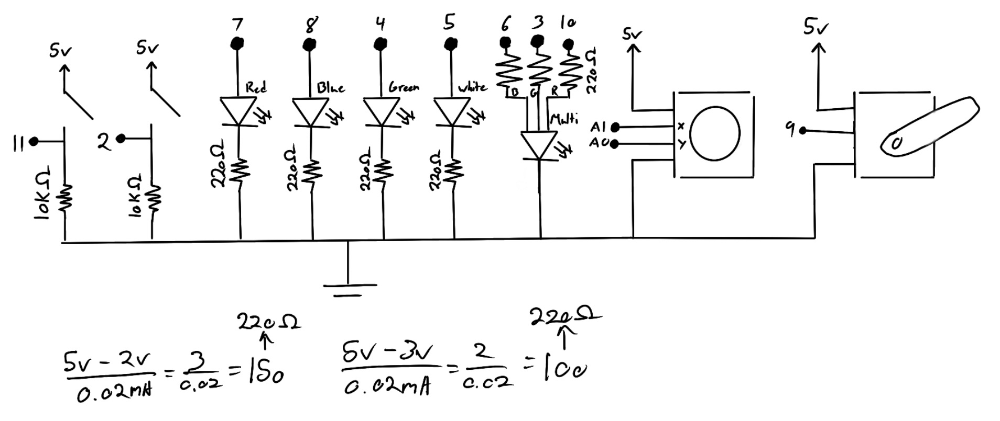
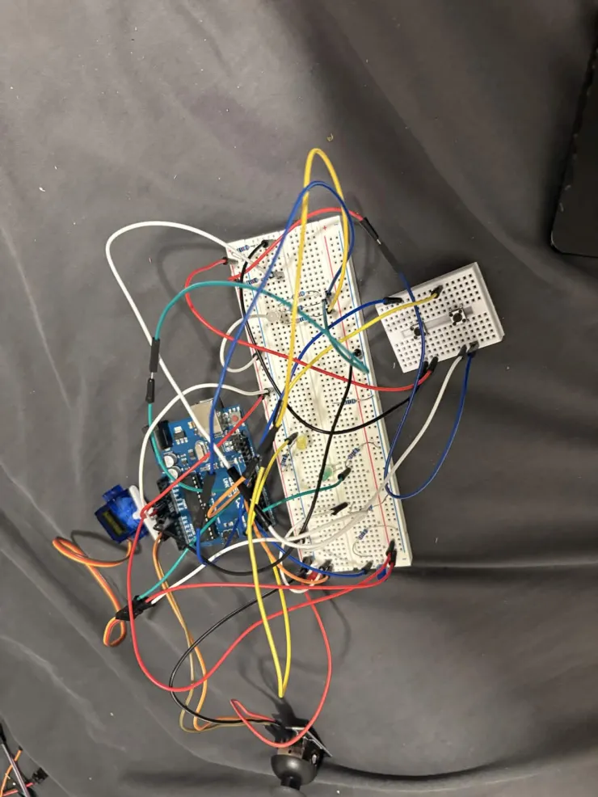
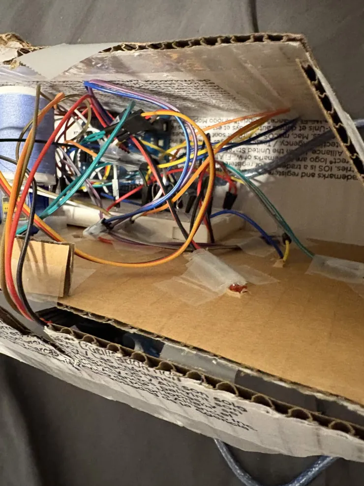
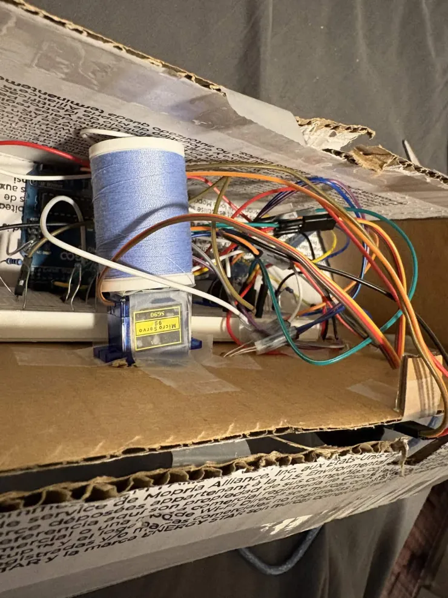

GuidingLight is an interactive navigation system that uses a joystick to select directional signals that are then converted into colored lighting and motion. The project is a system that could guide a user through directions or decisions by translating input into visual feedback.
The joystick acts as the primary input device. Moving the joystick in different directions activates LEDs that represent those directions. Pressing a "select" button allows the currently active LED directions to be "locked" on, storing the user's selections. When the "On/Off" button is pressed, the system reads the activated LEDs and translates them into a color display using a multicolored LED. This LED blends the selected colors together, creating combinations such as purple when both red and blue are active.
If the user had selected the white direction (up), the system additionally activates a servo motor which sweeps back and forth. Pressing the "On/Off" button again resets the system, turning off the LED and stopping the servo.

The schematic shows the Arduino connected to a joystick, four LEDs representing directional inputs, an RGB LED for blended color output, two buttons, and a servo motor. Each LED and button uses a resistor. The joystick provides two analog signals for X and Y movement.



The circuit was constructed on a breadboard using an Arduino. The joystick's X and Y axes connect to analog pins A1 and A0, allowing the program to read directional movement. Four LEDs represent the directions: blue for left, red for right, green for down, and white for up.
A separate multicolored LED provides color feedback by blending the red, green, and blue channels. These channels are connected to PWM pins on the Arduino so that the brightness of each channel can be controlled using analogWrite().
Two push buttons are used in the system. The LED select button stores the current directional selections, while the activate button triggers the multicolored display and optionally the servo motor. The servo motor connects to pin 9 and is powered directly through the Arduino.
#include
Servo myServo;
const int servoPin = 9;
const int activateButton = 2;
const int ledButton = 11;
const int xAxis = A1;
const int yAxis = A0;
// Joystick thresholds
const int DEAD_LOW = 400;
const int DEAD_HIGH = 600;
const int whiteLED = 5; // Up
const int greenLED = 4; // Down
const int redLED = 8; // Left
const int blueLED = 7; // Right
const int rgbRed = 10;
const int rgbGreen = 3;
const int rgbBlue = 6;
bool rgbActive = false;
bool servoMoving = false;
// joystick values
int xVal = 0;
int yVal = 0;
// servo movement
int pos = 0;
int direction = 1;
// button states
int activateState = LOW;
int lastActivateState = LOW;
int lockState = LOW;
int lastLockState = LOW;
bool lockWhite = false;
bool lockGreen = false;
bool lockRed = false;
bool lockBlue = false;
void setup() {
myServo.attach(servoPin);
pinMode(activateButton, INPUT_PULLUP);
pinMode(ledButton, INPUT_PULLUP);
pinMode(whiteLED, OUTPUT);
pinMode(greenLED, OUTPUT);
pinMode(redLED, OUTPUT);
pinMode(blueLED, OUTPUT);
pinMode(rgbRed, OUTPUT);
pinMode(rgbGreen, OUTPUT);
pinMode(rgbBlue, OUTPUT);
myServo.write(0);
}
void loop() {
handleActivateButton();
moveServo();
handleJoystick();
}
void handleActivateButton() {
activateState = digitalRead(activateButton);
if (lastActivateState == LOW && activateState == HIGH) {
// If system active → turn off
if (servoMoving || rgbActive) {
stopSystem();
}
// Otherwise activate
else {
activateSystem();
}
delay(200);
}
lastActivateState = activateState;
}
void activateSystem() {
readJoystick();
bool up = (yVal > DEAD_HIGH);
bool down = (yVal < DEAD_LOW);
bool left = (xVal < DEAD_LOW);
bool right = (xVal > DEAD_HIGH);
bool redActive = left || lockRed;
bool greenActive = down || lockGreen;
bool blueActive = right || lockBlue;
// RGB Activation
if (redActive || greenActive || blueActive) {
if (redActive) analogWrite(rgbRed,255);
if (greenActive) analogWrite(rgbGreen,255);
if (blueActive) analogWrite(rgbBlue,255);
rgbActive = true;
}
bool whiteWasActive = up || lockWhite;
// clear locked states
lockWhite = false;
lockGreen = false;
lockRed = false;
lockBlue = false;
// turn off LEDs
digitalWrite(whiteLED,LOW);
digitalWrite(greenLED,LOW);
digitalWrite(redLED,LOW);
digitalWrite(blueLED,LOW);
// servo only if UP active
if (whiteWasActive) {
servoMoving = true;
pos = 0;
}
}
void stopSystem() {
servoMoving = false;
rgbActive = false;
myServo.write(0);
analogWrite(rgbRed,0);
analogWrite(rgbGreen,0);
analogWrite(rgbBlue,0);
}
void moveServo() {
if (!servoMoving) return;
myServo.write(pos);
pos += direction;
if (pos >= 180) direction = -1;
if (pos <= 0) direction = 1;
delay(15);
}
void handleJoystick() {
if (servoMoving || rgbActive) return;
readJoystick();
bool up = (yVal > DEAD_HIGH);
bool down = (yVal < DEAD_LOW);
bool left = (xVal < DEAD_LOW);
bool right = (xVal > DEAD_HIGH);
handleLockButton(up,down,left,right);
digitalWrite(whiteLED, up || lockWhite);
digitalWrite(greenLED, down || lockGreen);
digitalWrite(redLED, left || lockRed);
digitalWrite(blueLED, right || lockBlue);
}
void handleLockButton(bool up,bool down,bool left,bool right) {
lockState = digitalRead(ledButton);
if (lastLockState == LOW && lockState == HIGH) {
if (up) lockWhite = true;
if (down) lockGreen = true;
if (left) lockRed = true;
if (right) lockBlue = true;
delay(200);
}
lastLockState = lockState;
}
void readJoystick() {
xVal = analogRead(xAxis);
yVal = analogRead(yAxis);
}
The Arduino constantly reads the joystick's X and Y analog values to determine its direction. Depending on the joystick position, one of four LEDs turns on to indicate the direction selected.
Pressing the LED select button saves the currently active directions so they remain illuminated even when the joystick returns to the center position. This allows multiple directions to be combined.
When the activate button is pressed, the program reads which directional LEDs were active or locked. These directions correspond to the red, green, and blue channels of the multicolored LED. The system then activates the multicolored LED by turning on the appropriate channels, creating blended colors if multiple channels are active.
If the white direction (up) was selected before activation, the servo motor begins sweeping back and forth. Pressing the activate button again resets the system by turning off the multicolored LED and stopping the servo.
This demo video shows the joystick controlling directional LEDs, locking multiple directions, activating the multicolored LED blending, and triggering the servo motor when the white direction is selected.